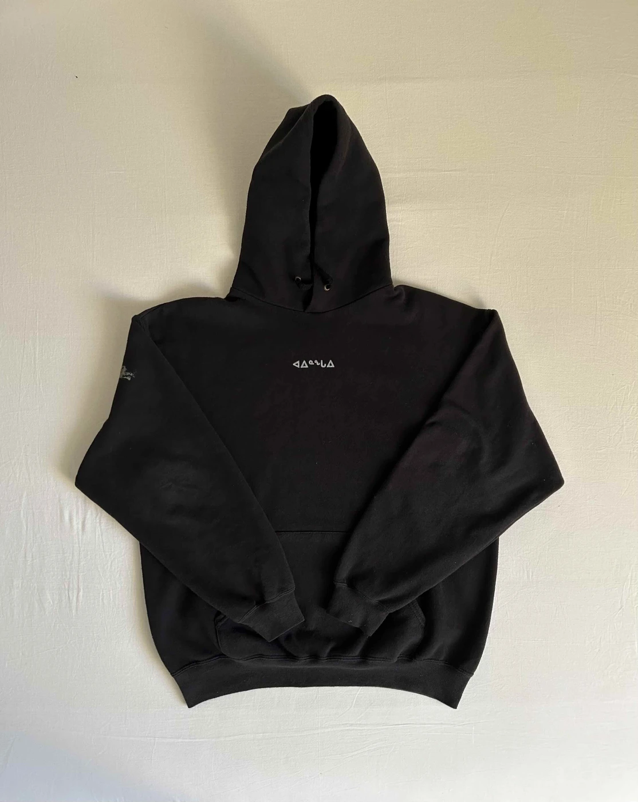
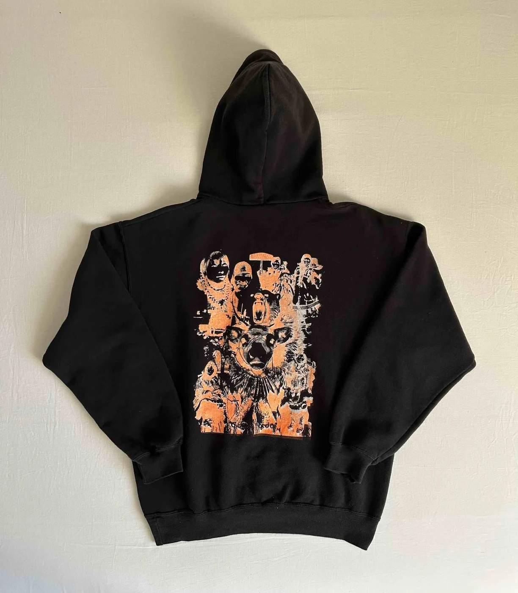
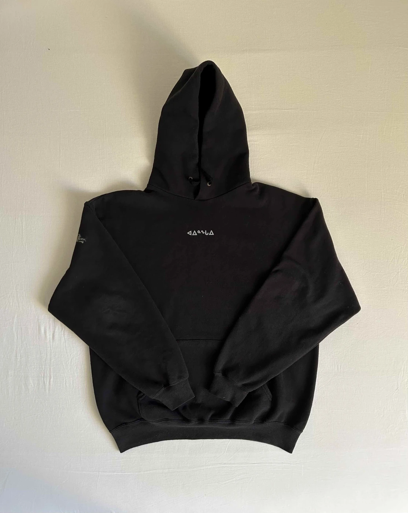
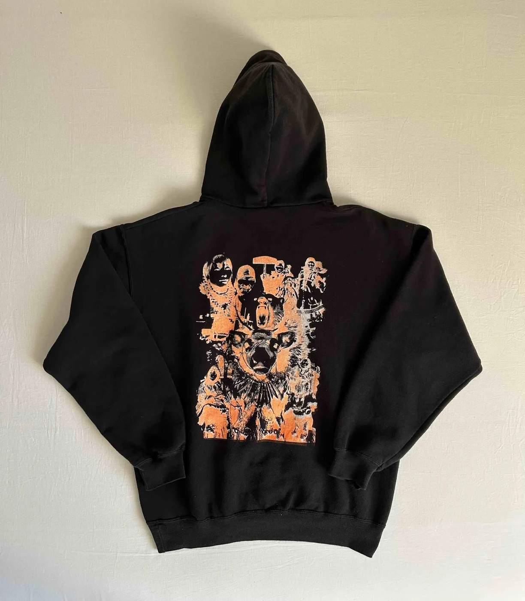

A research project which stemmed from the topic of 'exploitative productivity', performed as a soundscape and documented in a research journal.
ᑐᙵᓱ , meaning 'welcome' in Inuktitut, is a two-part soundscape which explores the constrast between traditional and mainsteam clothing through sonic mediums, highlighting the ways in which our modern economy exploits and neglects that art of fashion in the name of productivity. ᑐᙵᓱ was performed on [Mushroom Radio] on the 17th of May at the Royal Academy of Art in The Hague.
Accompanying posters and custom apparrel depict a visual exploration into the style and ancient technique behind the making and wearing of native Inuit garments. (1) Untitled, A2 laserprint. (2) ᑕᑯᓇᓵᕐᓇᑯᓂ (Long time no see), A2 laserprint and silkscreen print hoodie.
ᑐᙵᓱ , meaning 'welcome' in Inuktitut, is a two-part soundscape which explores the constrast between traditional and mainsteam clothing through sonic mediums, highlighting the ways in which our modern economy exploits and neglects that art of fashion in the name of productivity. ᑐᙵᓱ was performed on [Mushroom Radio] on the 17th of May at the Royal Academy of Art in The Hague.
Accompanying posters and custom apparrel depict a visual exploration into the style and ancient technique behind the making and wearing of native Inuit garments. (1) Untitled, A2 laserprint. (2) ᑕᑯᓇᓵᕐᓇᑯᓂ (Long time no see), A2 laserprint and silkscreen print hoodie.
Typeface — Droid Serif, Pigiarniq
Paper — Bio Top 80GR
Printer — KABK Computer Workshop
Sound · Publication · Poster · Apparrel
Duration: 8:33min
95 pages | 135 × 190 mm | English
The Hague, May 2024
Paper — Bio Top 80GR
Printer — KABK Computer Workshop
Sound · Publication · Poster · Apparrel
Duration: 8:33min
95 pages | 135 × 190 mm | English
The Hague, May 2024

 


